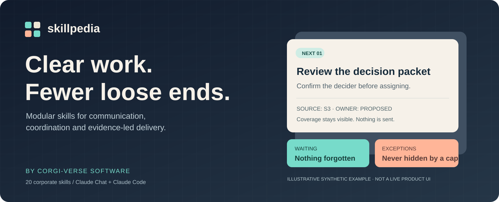

A small window. The evidence still intact.
This is the actual local helper output from the bundled synthetic fixture. It is not a connected inbox, an Expedia interface or a live product application. The helper organizes normalized records; no model or connector was run.
Plain-text evidence · Installation · Security boundaries
Rendered record output
# Attention Window
As of 2026-09-30T16:00:00Z · revision 1 · corporate
Coverage: **SUPPLIED-ONLY** — Synthetic fixture only; no live inbox, channel or company system
Window examined: 2026-09-30T08:00:00Z to 2026-09-30T16:00:00Z. Retrieved: 2026-09-30T16:00:00Z.
Coverage gap: Fixture covers nine synthetic records; attachments and live systems were not read.
## Critical exceptions — all shown
- **I-101 · Verify affected test journey** — Synthetic sandbox retry failure needs an impact check; P-01 \(confirmed\); date unknown; sources S1
- **R-109 · Consult the approved escalation policy** — Synthetic security-review exception is unconfirmed; unassigned \(unknown\); date unknown; sources S9
## Next actions
- **T-102 · Finish the review packet** — Provide the agreed review packet; P-02 \(confirmed\); OVERDUE \(2026-09-30T14:00:00Z\); sources S2
- **I-108 · Recheck the dependency source** — Dependency status has not been rechecked; unassigned \(unknown\); date unknown; sources S8 · STALE—recheck source
- **D-103 · Ask the confirmed decider to choose** — Choose staged rollout versus deferral; P-03 \(proposed\); due 2026-09-30T18:00:00Z; sources S3
Ordinary overflow: 1. Retained IDs: T-107.
Waiting: 1 · Needs decision: 1 · Watch: 1 · Done: 1 · Cancelled: 0
Read-only brief. Nothing was sent, assigned, archived, scheduled or marked complete. Counts may overlap for unresolved decisions; completion applies only to inspected scope.